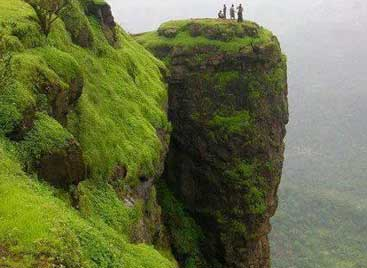
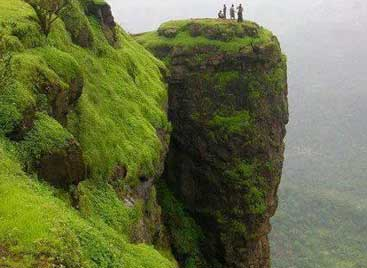

Nelliyampathy
If you see the mist floating in the air and a pleasant aroma of coffee teasing your nostrils, a chain of majestic mountains peaking from all around and a wonderful weather relaxing your nerves, then you are not dreaming, you are in a small beautiful hill station of Kerala known as Nelliyampathy
 
